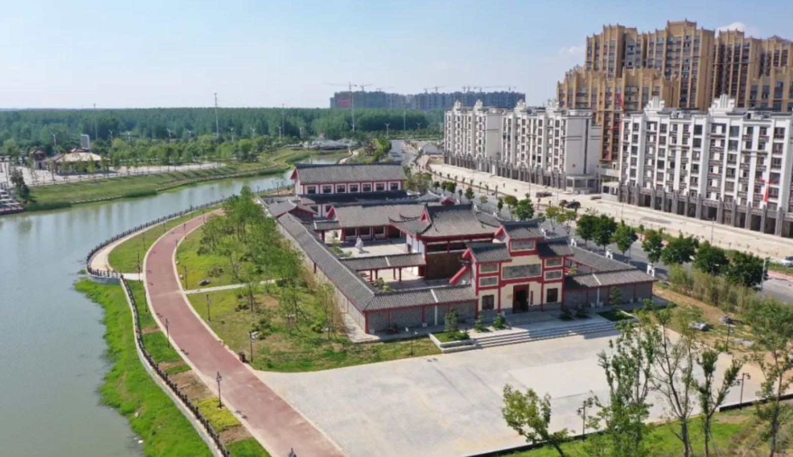
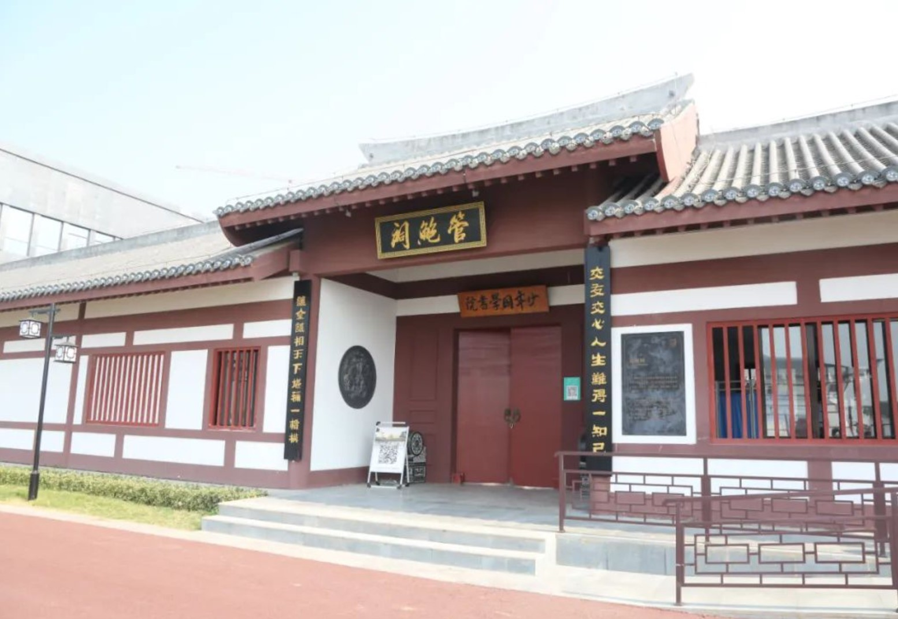

镇淮楼
镇淮楼景点地处走读淮河景观带的中心地带和制高点，建筑总面积453平方米，坐北朝南，底座为基台，长28米，宽14米，高8米，略呈梯形，坚实稳重。基台正中为拱形门洞，宛如城门。东西两侧为拾级而上的踏步。基台上是两层仿古建筑的高楼，面阔三间，楼高19.92米，楼顶为重檐九脊式，四角翘起的龙头，双目圆睁直视，大口吞云吐雾，似有腾飞之势，令人惊叹不已。

孙叔敖祠
孙叔敖(约公元前630年~公元前593年)，芈姓，蔿氏，名敖，字孙叔，楚郢都人(今纪南城)湖北荆州人。春秋时期楚国令尹。规划重建的孙叔敖祠堂，为祭祖型祠堂，在展示孙叔敖治水、治国功勋的同时，也被打造为淮滨县廉政文化教育基地。该基地从孙叔敖主题展为切入点，通过爱国将领的事迹与精神实现爱国主义教育。由点及面，推进了红色革命教育和廉政文化资源的融合，适合各年龄段、各行业的学员参观学习。
瘦西湖五亭桥
五亭桥原址位于江苏省扬州市瘦西湖内，是瘦西湖的标志，其最大的特点是阴柔阳刚的完美结合，南秀北雄的有机融和。五亭桥有“中国最美的桥”之称，是古代桥梁建筑的杰作。规划修建的五亭桥精简体量，仿古重建，建筑总面积647平方米，是整个景区具有旅游观光和文化体验功能的代表性建筑之一。五亭桥彩绘施工由北京大学一名教授带着自己学生手绘完成，主要展现的是国学教育中的“二十四孝”文化。

管鲍祠
管鲍祠是为纪念管仲和鲍叔牙而建立的祠堂，原址在安徽省阜阳市颍上县。规划设计的管鲍祠为前后两层浮梁起架结构古建筑，建筑总面积1300平方米，青砖绿瓦，飞檐走壁，气势恢宏。建成后的管鲍祠属于代表性建筑，在具有文化体验与旅游观光功能同事，也被我们打造为少年国学院和“信商之家”淮滨服务中心。